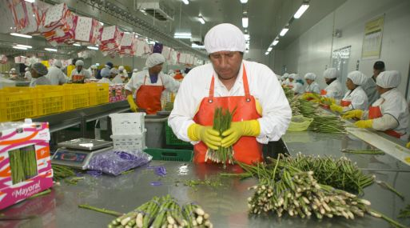

Agroexportaciones no tradicionales a EEUU crecieron casi 100% desde la entrada en vigencia del TLC

De acuerdo con ComexPerú a cinco años de la firma del acuerdo comercial, las cifras demuestran que el sector agrícola peruano se ha beneficiado, especialmente los productos con valor agregado. Entre 2009 y 2013, las exportaciones agropecuarias no tradicionales a Estados Unidos crecieron, en promedio, un 16% al año, pasando de US$580 millones a US$1,041 millones, lo que significa que se ha duplicado el monto, afirmó la Sociedad de Comercio Exterior del Perú (ComexPerú).
“Cinco años después de la firma del TLC, los datos nos muestran que no sólo que no ha sido perjudicial, sino que elsector agropecuario, especialmente el no tradicional (de valor agregado), se ha dinamizado y ha incrementado sustancialmente sus exportaciones”, precisó el gremio empresarial.
ComexPerú señaló que el resultado de las agroexportaciones muestran que el sector ha crecido a un ritmo mayor a las exportaciones peruanas totales hacia Estados Unidos, que promedian un crecimiento del 11% anual.
Asimismo, esto ha contribuido a que el país norteamericano se mantenga como el destino más importante de estos envíos, con más del 80% del total de las exportaciones agrícolas no tradicionales.
El producto agropecuario no tradicional más exportado a al país del norte fue el espárrago fresco o refrigerado, que representó alrededor de 24% del total de estas exportaciones en el período 2009-2013.
La segunda partida más importante en este rubro fueron las uvas frescas, que representaron alrededor de un 8% del total de los envíos, mientras que las alcachofas ocuparon el tercer lugar de nuestras partidas agropecuarias no tradicionales exportadas a Estados Unidos y representaron alrededor del 7% del total.